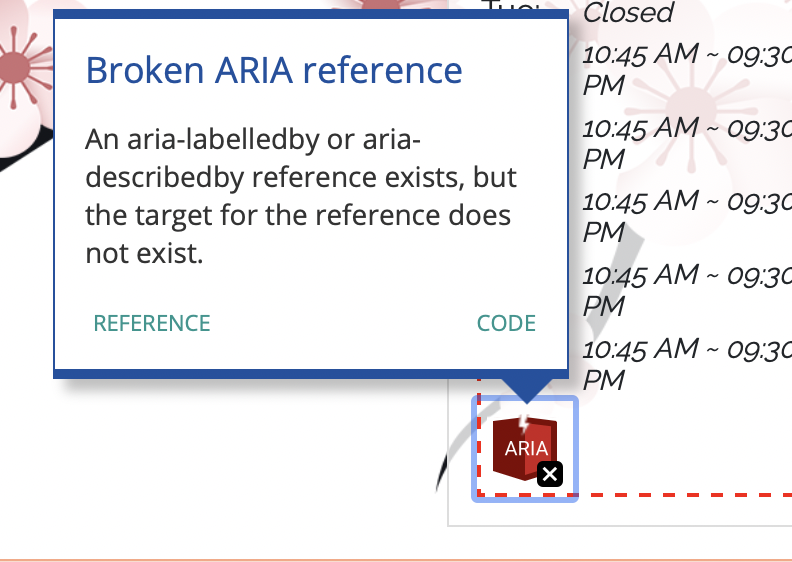

Responsive Redesign
Introduction
For this project, I first selected an existing website, then analyzed it and identified its flaws based on usability and accessibility criteria. Next, I redesigned the website to address the usability issues detected in the previous step, and then created low-fi and high-fidelity prototypes for various screen sizes. In the end, I built a responsive website based on these prototypes.
Link to redesign page
Identifying Usability Problems
1. Picking a Web page
The chosen website is the ordering website of Chong Qing House.
Why choose it? This site is accessible to anyone, but it's not that popular. Dishes at Chong Qing House taste good, but its ordering site is hard to use. So I want to redesign it.
2. Finding Problems
(1) The layout design violates aesthetic and minimalist design principles.
Currently there are multiple navbars and everything is displayed on one page. It is best to integrate category and cart items into the navigation bar, so that users can access different web pages in the navigation bar.
(2) The page doesn't provide enough help and documentation.
For example, I have no idea about the difference between Vegetable Egg Rolls and Shanghai Spring Rolls. Both of them are rolls and share the same price. I don't know which one to order. Another example is the absence of a search bar. If I want to order Double Pork, I need to look in the long dish list, which is quite annoying.
(3) Photo album.
Some photos have captions with the name of the dish, while most images don't. There are even several identical images.
(4) The Menu page doesn’t minimize user’s memory load.
There is only text for each dish. The corresponding image is in another page. If the user want to know what Wonto Soup looks like, he need to recall or look at the image in the Photo album page and then go back to order. Instead, if a user click the name of a dish, it would be better to display its image and order options.
(5) Payment methods indicated by the pictures and text are inconsistent.
The payment methods shown in the pictures are credit card and cash, while the payment methods indicated by the text are WeChat, Alipay, credit card and BOA transfer.
(6) Low flexibility and efficiency of use.
The website doesn’t allow users to tailor frequent actions. There is no option for user to perform the same order as last time.
(7) No error prevention.
If the user clicks the delete button by mistake, there is no confirmation message before the action is performed.
3. Accessibility

- 

I agree with the problems detected.
(1) The images of checkout option don’t have alternative text.
Adding alternative text to image is important. Because it can pass the content of an image to a blind person using a screen reader. It is useful for a sighted person when the image fails to load. It is also used for search engine trying to understand the content of a web page.
(2) The opening hours table has broken ARIA reference problem.
Without an ARIA reference target, a screen readers won't recognize these relationships, and blind users may miss key information.
(3) The main Menu part doesn’t have sufficient contrast between text and its background color.
According to WCAG 2.0, the contrast ratio between text and its background should be at least 4.5:1. In the main Menu part, the background color is #FAD3C7, the text color is #E04406, their contrast ratio is 3.04:1. This is not friendly to users with color blindness or low vision.
(4) There are redundant links in the main Menu part.
The image and text lead to the same address.
Visual Redesign
1. Low-fidelity Wireframing

2. Visual Design Style Guide

3. High-Fidelity Prototyping
Conclusion
In this project, I got more familiar with usability and accessibility standards by applying them to analyze a real website and identify its flaws. I also learned to use a combination of flexbox, grid, responsive units, media queries to make the site responsive and suitable for mobile, tablet, and desktop.